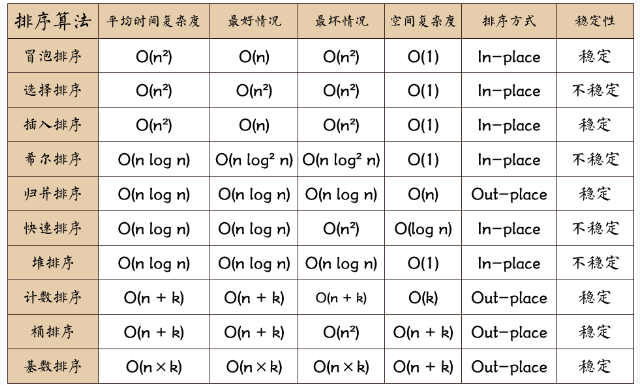
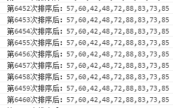

最近空闲时间逛论坛发现,好多人在面试时问了排序算法,比如快速排序以及冒泡排序。我回想了下,依稀记得有什么
for循环嵌套,然后就没了。这样可不好,不能工作了就忘了这些基础,会被淘汰的。所以又重新学习了下这两个算法,发现自己还是有很多坑要填,做个学习笔记吧,以免又忘了。
排序算法说明:
- 时间复杂度指的是一个算法执行所耗费的时间
- 空间复杂度指运行完一个程序所需内存的大小
- 稳定指,如果a=b,a在b的前面,排序后a仍然在b的前面
- 不稳定指,如果a=b,a在b的前面,排序后可能会交换位置
排序算法图片总结:

快速排序
参考: https://blog.csdn.net/loving_m/article/details/52993521
https://blog.csdn.net/morewindows/article/details/6684558
该方法的基本思想是：
1．先从数列中取出一个数作为基准数。
2．分区过程，将比这个数大的数全放到它的右边，小于或等于它的数全放到它的左边。
3．再对左右区间重复第二步，直到各区间只有一个数。
网上前辈对快速排序做了个进一步的说明：挖坑填数+分治法
不完整的代码
上面这段代码还是我看了下相关博客然后以为自己会了就大差不差的写出来的,结果运行下直接打脸,堆栈溢出了。
百思不得其解,只好照着他人代码一个个对比,发现少了一个判断arr长度是否大于1的if判断语句。加上试了试,能用了！
完整且正确的代码
这个方法其实思想也很简单,关键要理解。有几个难点要牢记：
- 当我第一次通过
for循环后得到了左右两个数组以及基准数,那么我如何对左右两个数组继续进行排序呢?(第一次得到的左右两个数组仅仅是跟一个基准数进行比较而已,远远没有达到所有数据都进行排序的效果。)
答案是递归。 - 如果想到了用递归,那么我该怎么实施呢？直接
return quickSort(?)?- 2.1 这里又有一个问题了：我调用
quickSort(arr)后肯定是要得到排序后的数组,可是上述我自己写得不完整的代码里并没有return 数组这一步啊,即使我不断递归,那我怎么返回数组呢？ - 2.2 还有,如果直接
return quickSort(left)或者return quickSort(right)肯定是不对的。那我return quickSort(left.concat(x, right))?
- 2.1 这里又有一个问题了：我调用
首先我需要解决问题2.1。我肯定要返回一个数组,但是不可能直接
return arr,也不可能return left同样不可能return right。
这时候就要思考了,我第一次调用quickSort()得到了left和right数组,那我肯定还需要继续对这两个数组内部进行再度排序。再度排序方法其实一样,继续分别在这两个数组内部找一个基准数,然后把比这个基准数小的放到新的left数组内,以此类推,对这个新left继续调用quickSort()继续重复操作,那么比较到最后,可能只有一个数据甚至没有数据比最终的基准数小,那么不就可以确定该数或者基准数就是最小数据,应该放在数组的第一位了呢。所以我需要在方法一开始就判断arr.length <= 1,它代表了可能最后的基准数就是最小的或者有一个数据比最后的基准数小。
这样确定了第一个数和最终的基准数,那么就可以对比最终的基准数大的数据继续快速排序,然后不就可以得到第二个、第三个等等等等的数据了吗？而得到的这些数据依然放在数组内,只是它们的数组只包含它们一个数据罢了,所以最终可以用concat()方法把它们连接在一起,这样,快速排序方法就完成了。
至于问题2.2,自己动手运行一把看看呗。

经过动手实践,证明这种想法是错的。
冒泡排序
参考：https://blog.csdn.net/shuaizai88/article/details/73250615
https://www.cnblogs.com/zhouliang/p/6638010.html
https://www.cnblogs.com/beli/p/6297741.html
冒泡排序的思想：比较相邻两个数据值,如果后面的比前面的大就调换位置,否则位置不变。
第一轮循环后,最后一个元素应该是最大的值。
按照步骤一的方法进行相邻两个元素的比较,这个时候由于最后一个元素已经是最大的了,所以最后一个元素不用比较。
我的初步实现：
？？？WTF？？？
为什么会这样？？？
为什么第一个是72呢？？？
这是因为我的
j是从1开始的,相当于一开始就比较arr[1]和arr[2],忽略了arr[0]。让j从0开始就能正确排序了。
但是,我仔细对比网上的代码,发现两个for循环里有点不一样,给出网上的代码：
有没有觉得奇怪,为什么
i < arr.length -1?以及为什么j < arr.length - i - 1?
首先,思考下为什么要两层for循环嵌套?
我可以先只用一层for循环来实践下会发生什么：
只用了一个for循环,我们只能得到数组中最大的数据,其他的数据位置几乎没有变化。而且这里我也用了j < arr.length -1,为什么呢？相信看代码就能明白,因为我下面直接用arr[j]与arr[j+1]进行比较了,那么j最大值并不需要与arr.length-1相等,因为我还需要arr[j+1],所以只需要j+1的最大值与arr.length-1相等即可,那么j最大值只需要与arr.length-2相等即可,这样还少循环一次,效率上略微提高点。
我用了一个for循环并不能达到我所需要的结果,它只得到了最大值,那么我该如何继续排序呢？
其实思路是一样的,依然用for循环去比较相邻两个数的大小。一个比较耿直的思维是对刚刚for循环完的数组继续for循环可以得到第二大的数据,然后以此类推得到第三大等等数据,把这种思维实践下就是:
这样很蠢的不断去调用maopao2()也能得到最终正确的排序。怎么优化上述代码或者设计呢？
我们可以观察到,其实不断调用maopao2()也是一次循环事件了,那我可不可以在maopao2()外面套一层循环？
经过实践,这依然是正确的。那么能不能继续优化呢？
答案是当然可以！
第一轮循环结束,我得到了最大的数,第二轮循环结束,我得到了第二大的数,那么当我第一轮循环结束时,最大的数是不是已经移到了数组最后一项？第二轮循环时还需要对数组最后一项进行比较吗？答案是不需要的。第二轮循环只需要比较到倒数第三位置与倒数第二位置上的数据即可,因为倒数第一已经在上一轮循环被确定以及肯定是最大的数了。那么内层循环是不是只要循环数组总长度 - 1 - 外层循环的轮数就可以了？这样内层循环次数越来越少效率不就提高了嘛？这就是为什么j < arr.length - i - 1
还可以再优化下吗？
依然可以！
依然是上面的数组,总长度为10,当i=7时,已经是第8轮循环了,我已经确定了倒数第8大的数据,只剩下倒数第一和倒数第二了(因为数组下标是从0开始的,0对应着第一轮循环即确定第一大数据),那我是不是只要再循环一次就能结束？第9轮循环对应着i=8啊,而如果i<arr.length那么i最大值是9,可我i=8就能确定了为什么还要多循环一次呢？所以可以优化为i < arr.length - 1